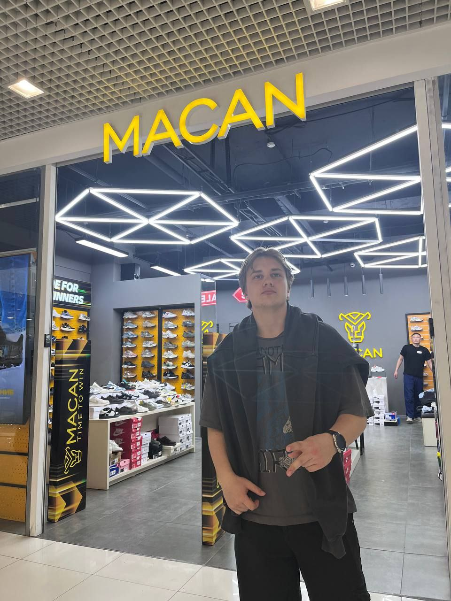
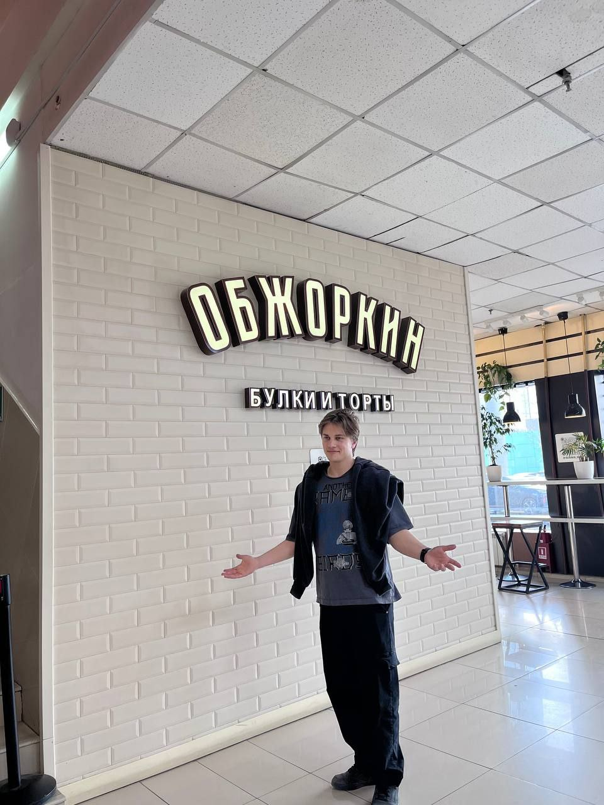
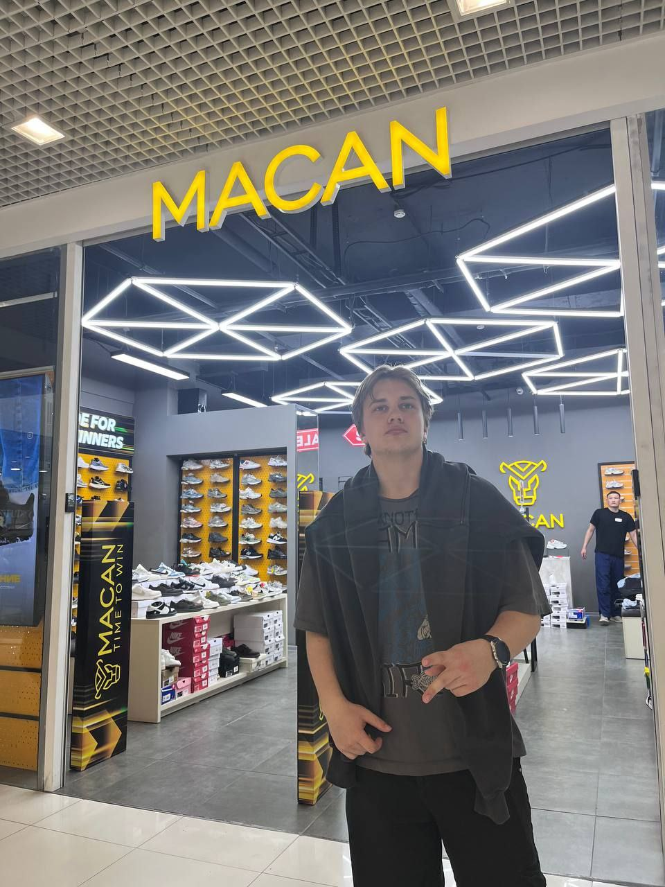
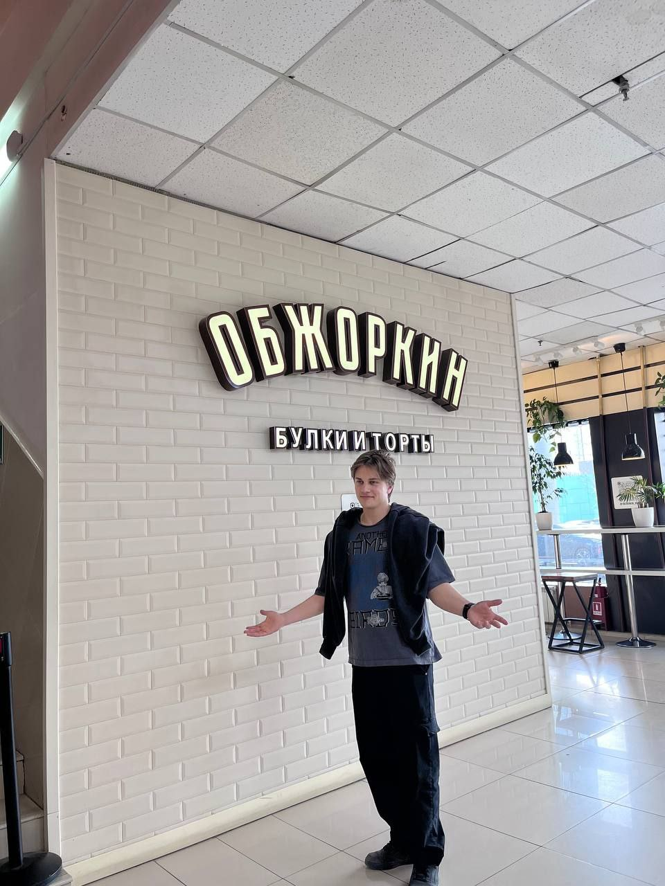
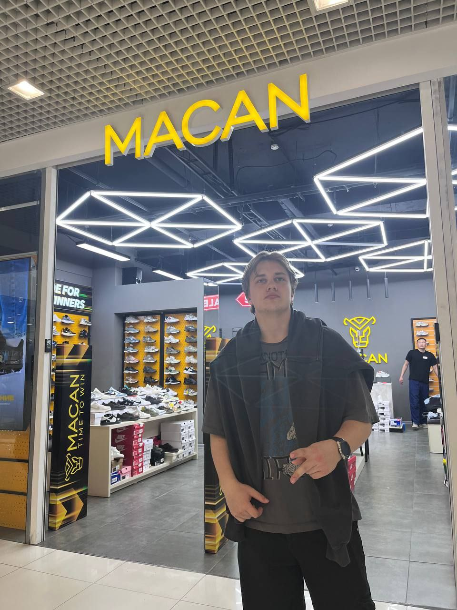
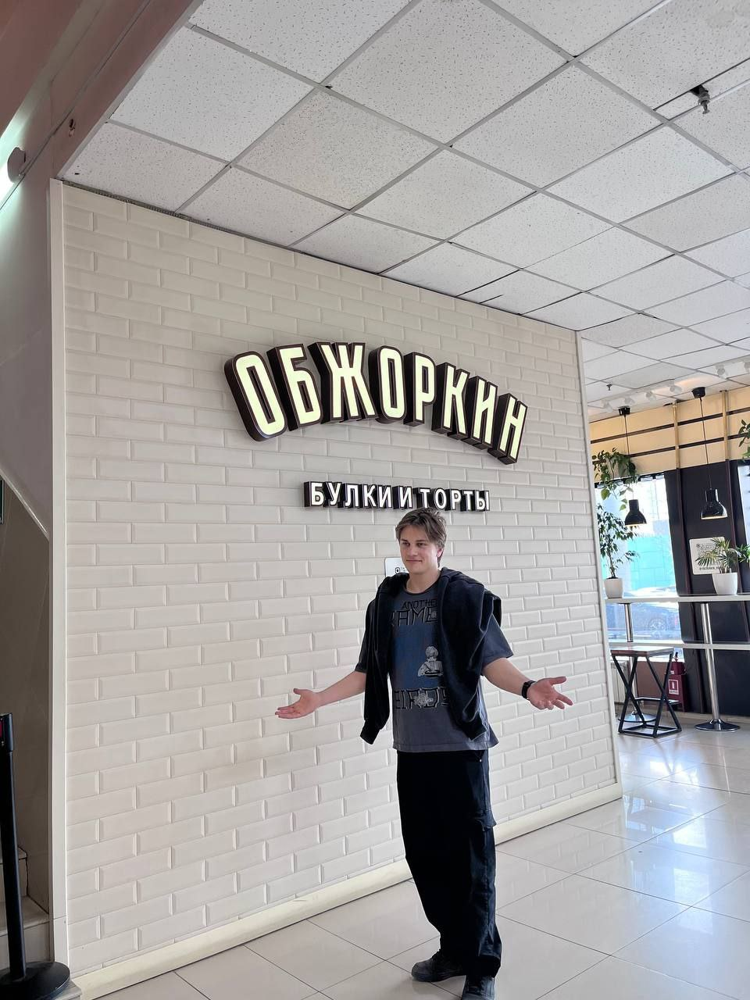

Чёткое фото
Мне 19 лет, на первом фото мне где то 14, вставил потому что просто чётко встал. Увлекаюсь программированием, волейболом, математикой увлекаюсь не по собственному желанию
 



Меня зовут Миша, я представляю вам свой первый полноценный сайт, немного визитка, немного просто интересной (по моему мнению) информации. Сайт идеально вам подойдёт если вам не терпится узнать кто такой Миша Сидореко, вы только что приехали в Челябинск, думаете что приготовить и где взять студента себе на работу. Надеюсь вам понравиться
Мне 19 лет, на первом фото мне где то 14, вставил потому что просто чётко встал. Увлекаюсь программированием, волейболом, математикой увлекаюсь не по собственному желанию

